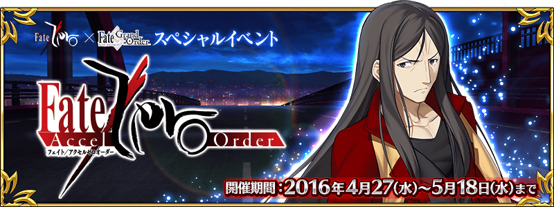
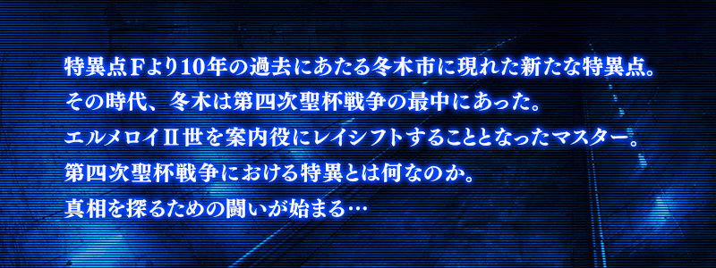
◆活動舉辦期間◆
2016年4月27日(三)22:40～5月11日(三)12:595月18日(三)12:59
◆活動概要◆
舉辦Fate/Zero×Fate/Grand Order特別活動「Fate/Accel Zero Order」！
送上Fate/Zero的原作者虚淵玄親自執筆的原創故事，舉辦特別活動！
第四次聖杯戰爭當時的在冬木發生的新故事。！
與諸葛孔明〔埃爾梅羅II世〕一同解開另個第四次聖杯戰爭之謎吧！
◆參加條件◆
僅有通過「特異典F 炎上汙染都市 冬木」的Master方能參加
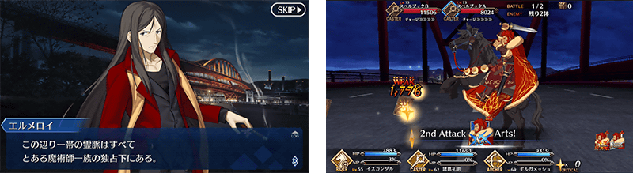
在Fate/Grand Order官方網站內的首頁及展覽室，公開了特別活動的電視廣告。
請務必藉此確認。
2016年4月20日(三)在Niconico生放送播送特別節目「迦爾帝亞放送局 Vol.2 Fate/Zero特別活動紀念放送」。
在此節目會發表關於Fate/Zero×Fate/Grand Order特別活動的最新情報！
另外也會同時舉辦與節目聯動紀念Fate/Zero×Fate/Grand Order特別活動舉辦的宣傳活動！
詳情請從下列網址確認。
節目頁面：
http://live.nicovideo.jp/watch/lv257168350
節目聯動宣傳活動特設頁面：
http://cp.fate-go.jp/fate/zero/
◆節目標題◆
「迦爾帝亞放送局 Vol.2 Fate/Zero特別活動紀念放送」
◆放送時間◆
2016年4月20日(三) 19：00～（預定約2小時）
◆出演者◆
川澄綾子（聲優）
島﨑信長（聲優）
種田梨沙（聲優）
マフィア梶田（主持）
開發團隊 安生（DELiGHTWORKS）
宣傳擔當 川村（DELiGHTWORKS）
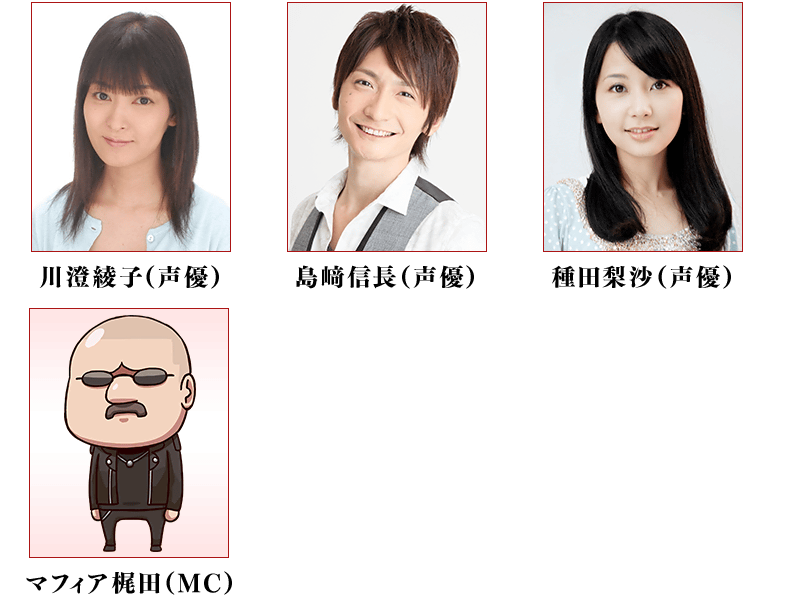
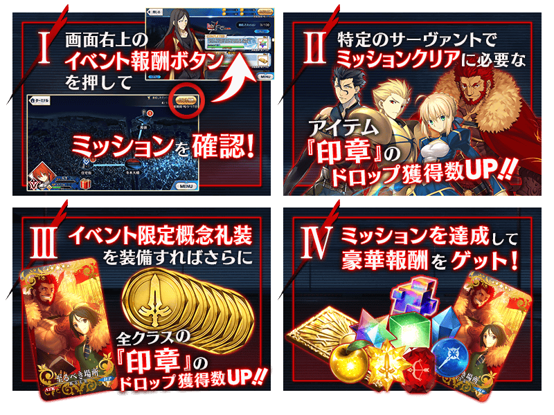
挑戰活動關卡的話會發生任務！
滿足通過條件達成任務能獲得豪華報酬。
還有，依照任務的完成數，開放新的關卡和任務。
通過任務來推進活動吧！
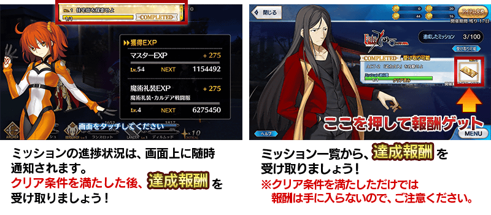
◆超值攻略方法・其1◆
將特定的Servant編入隊伍，讓為一部份任務的通過條件對象的活動道具「印章」的掉落獲得數提升！
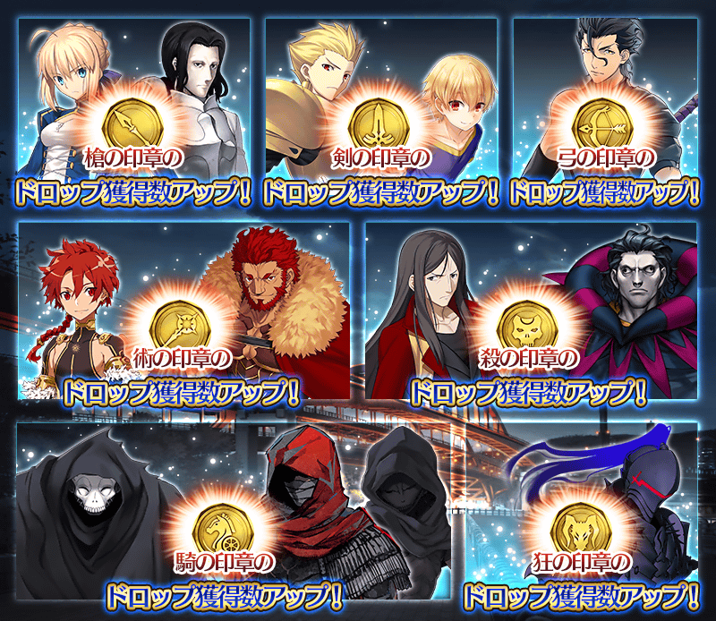
■對象Servant
阿爾托莉亞・潘德拉剛、吉爾・德・雷(Saber)、吉爾伽美什、子吉爾、迪爾姆德・奧德利暗、伊斯坎達爾、亞歷山大、諸葛孔明〔埃爾梅羅II世〕、吉爾・德・雷(Caster)、Emiya〔Assassin〕、咒腕的哈桑、百貌的哈桑、蘭斯洛特
◆超值攻略方法・其2◆
裝備此活動追加聖晶石召喚的新概念禮裝，讓與裝備的Servant同樣職階的活動道具「印章」的掉落獲得數提升。
還有，如果裝備能用收集來的活動道具交換獲得的活動限定概念禮裝，全職階的印章的掉落獲得數提升。
※如果是Extra職階的Servant的話裝備沒有此限制。
※請注意在各關卡的道具掉落率並非100%。
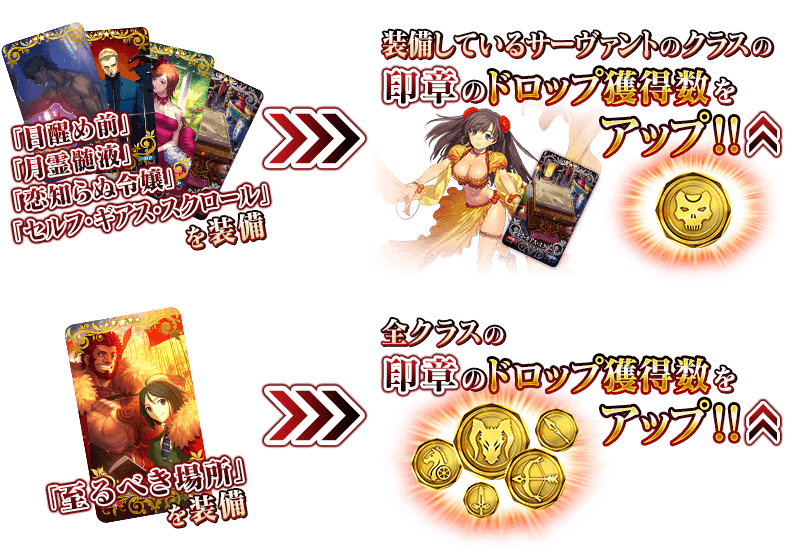
◆活動限定概念禮裝◆
| 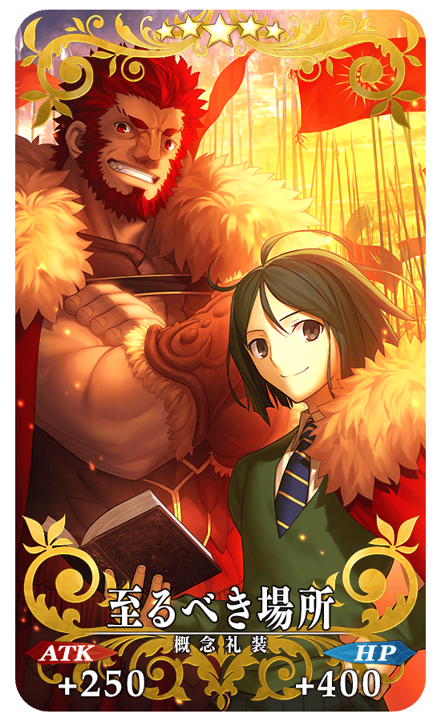 |
★★★★★SSR |
◆活動期間限定，獲得概念禮裝用EXP卡「刻印虫」吧！◆
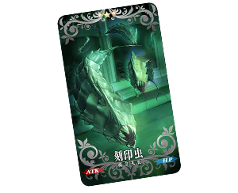
作為活動的報酬，能大幅度強化概念禮裝的EXP卡登場！
無論如何請藉此機會，強化喜愛的概念禮裝！
◆交換方法◆
交換期間：2016年4月27日(三)22:40～5月18日(三)12:595月25日(三)12:59
※交換期間結束後，「職階別印章」會消失。
從達文西工房内的「活動道具交換」，用收集來的活動專用道具來交換以下的道具。
◆能用劍之印章交換的道具◆
|
【技能強化素材、靈基再臨素材】 【其他道具】 |
◆能用弓之印章交換的道具◆
|
【技能強化素材、靈基再臨素材】 【其他道具】 |
◆能用槍之印章交換的道具◆
|
【技能強化素材、靈基再臨素材】 【其他道具】 |
◆能用騎之印章交換的道具◆
 |
【活動限定概念禮裝】 【靈基強化素材】 【其他道具】 |
◆能用術之印章交換的道具◆
|
【活動限定概念禮裝】 【靈基強化素材】 【其他道具】 |
◆能用殺之印章交換的道具◆
|
【活動限定概念禮裝】 【靈基強化素材】 【其他道具】 |
◆能用狂之印章交換的道具◆
|
【活動限定概念禮裝】 【靈基強化素材】 【其他道具】 |
◆「Fate/Accel Zero Order Pick Up召喚」期間◆
期間：2016年4月27日(三)22:40～5月11日(三)12:595月18日(三)12:59
以期間限定舉辦「Fate/Accel Zero Order Pick Up召喚」！
初登場的Servant「★5（SSR）伊斯坎達爾」以期間限定登場！
「★4(SR)Emiya〔Assassin〕」「★3(R)百貌的哈桑」也是新登場！
另外在Fate/Accel Zero Order活躍的Servant「★5（SSR）諸葛孔明〔埃爾梅羅II世〕」以每日交替Pick Up！
詳情請在聖晶石召喚畫面左下的召喚詳細確認。
※伊斯坎達爾在Pick Up期間結束後，不會追加到故事召喚。
還有，新規概念禮裝「★5（SSR）目醒め前」、「★5（SSR）月霊髄液」、「★4（SR）恋知らぬ令嬢」、「★3（R）セルフ・ギアス・スクロール」也新登場。
在Pick Up期間中，期間限定Servant、Pick Up Servant、新登場Servant、新登場概念禮裝的出現機率提升！
10次召喚★4(SR)以上1張確定和★3(R)以上的Servant1位確定！
※★4(SR)以上確定包含Servant和概念禮裝。
※所謂「Servant出現機率UP」意指比同稀有度的Servant及概念禮裝出現機率更高的設定。
| Pick Up日 | 每日交替Pick Up的Servant |
|---|---|
| 4月27日(三)22:40～5月3日(二)22:59 | 伊斯坎達爾 |
| 5月3日(二)23:00～5月4日(三)22:59 | 伊斯坎達爾、諸葛孔明〔埃爾梅羅II世〕 |
| 5月4日(三)23:00～5月5日(四)22:59 | 伊斯坎達爾 |
| 5月5日(四)23:00～5月6日(五)23:59 | 伊斯坎達爾、諸葛孔明〔埃爾梅羅II世〕 |
| 5月6日(五)23:00～5月7日(六)22:59 | 伊斯坎達爾 |
| 5月7日(六)23:00～5月8日(日)22:59 | 伊斯坎達爾、諸葛孔明〔埃爾梅羅II世〕 |
| 5月8日(日)23:00～5月9日(一)22:59 | 伊斯坎達爾 |
| 5月9日(一)23:00～5月10日(二)23:59 | 伊斯坎達爾、諸葛孔明〔埃爾梅羅II世〕 |
| 5月10日(二)23:00～ |
伊斯坎達爾 |
※請注意每日交替Pick Up的Servant會變更。
※關於Emiya〔Assassin〕、百貌的哈桑，在此Pick Up期間中，為常駐Pick Up的對象。
※關於其他的Servant・概念禮裝，請在聖晶石召喚畫面左下的「召喚詳細」確認。
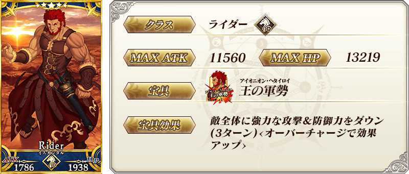

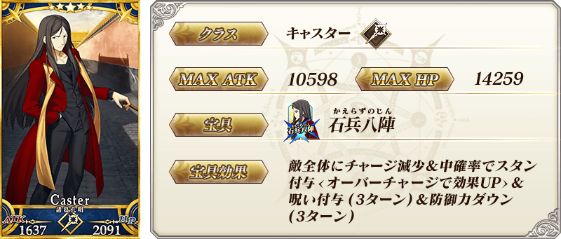

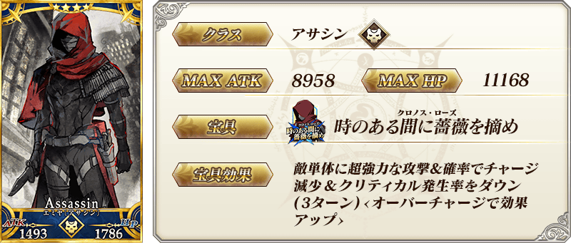
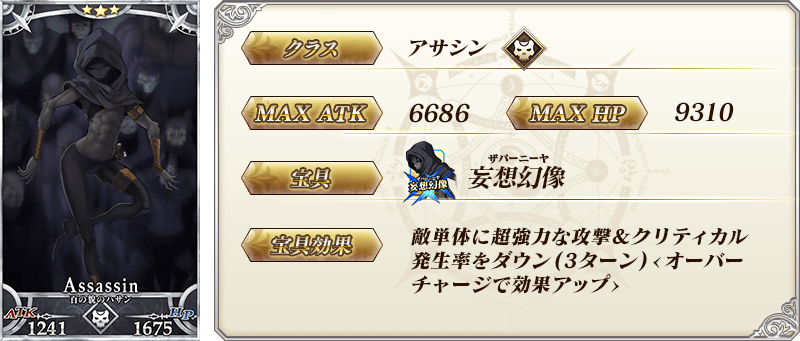
| 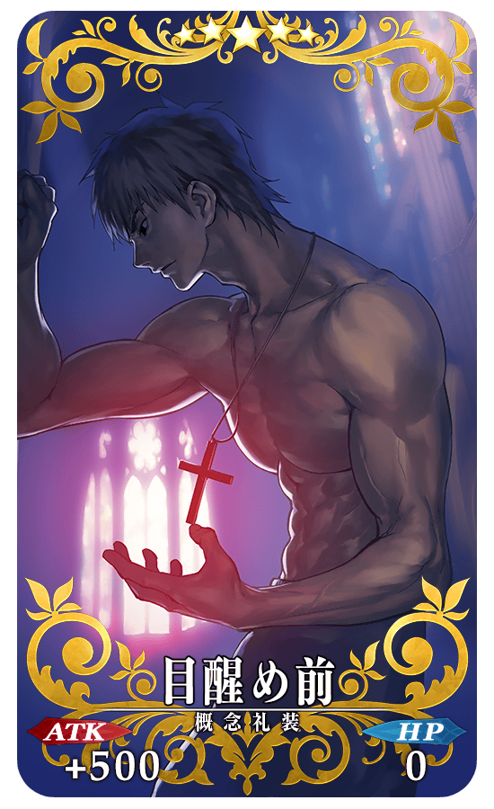 |
★★★★★SSR |
| 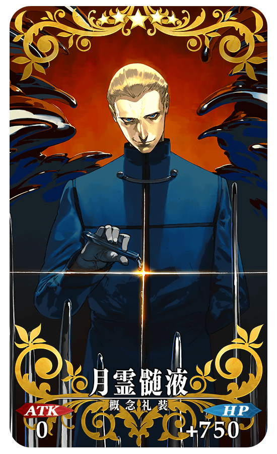 |
★★★★★SSR |
| 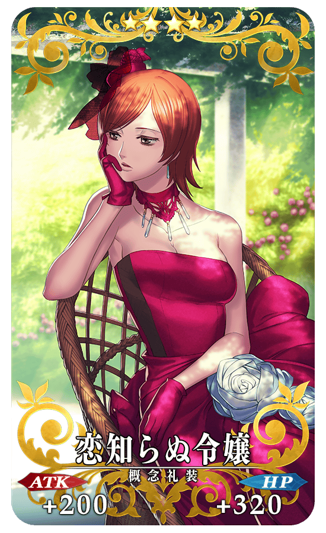 |
★★★★SR |
| 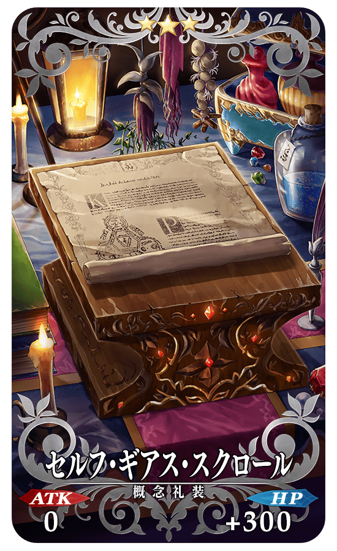 |
★★★R |
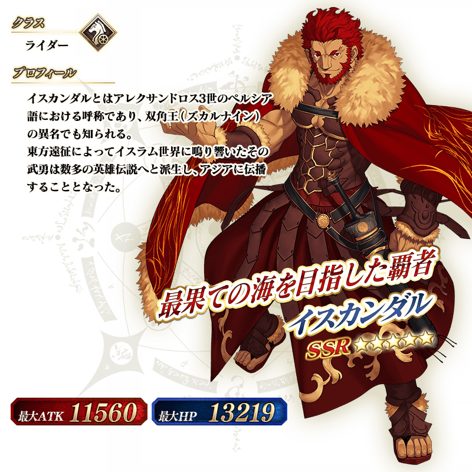
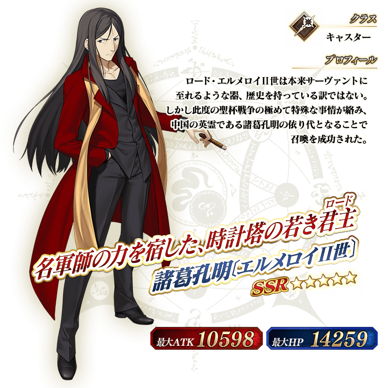